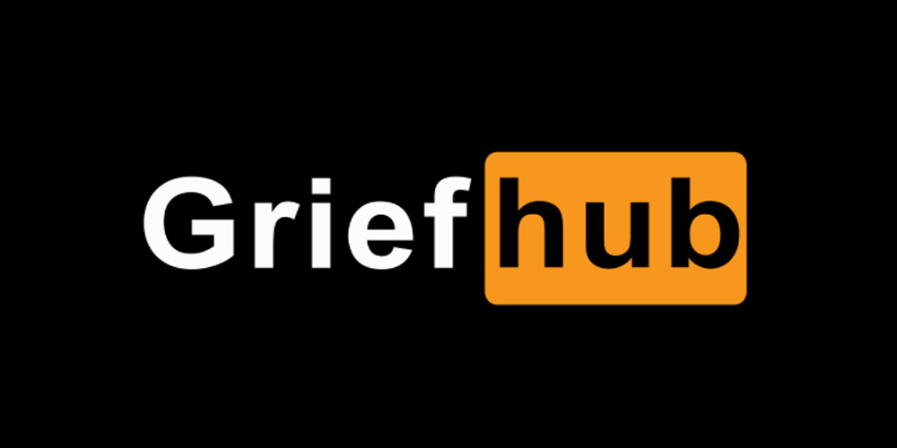

Présentée comme une archive performative vivante et subversive, GRIEFhub célèbre les identités queer arméniennes marginalisées en proposant une réflexion chorégraphique et performative sur la mémoire, la perte et la réinvention des récits collectifs. Dans une société où la mémoire des disparu.e.s se heurte à une pratique communale du silence, ce projet confronte l’oubli collectif et l’indifférence systémique qui façonnent les récits historiques et culturels queer arméniens en explorant les dynamiques des rituels contemporains de deuil : comment centraliser, dans les pratiques de mémoire, celles et ceux qui ont été relégué.e.s aux marges de la reconnaissance ? GRIEFhub réexamine les artefacts d’un passé occulté et s’engage dans une démarche mêlant une réappropriation culturelle à une déconstruction des paradigmes de l’effacement. La performance met en exergue les dimensions queer du deuil comme des pratiques actives de subversion, transformant les archives vivantes des corps arméniens queer en un espace performatif de revendication historique, culturelle et esthétique. Les icônes arméniennes queer mobilisées dans cette performance, produites par des artistes arménien.ne.s queer marginalisé.e.s par leur époque, sont détournées de leur invisibilité historique pour devenir des symboles et des outils critiques. Sur une plateforme, le corps queer culturel arménien s’articule dans une chorégraphie où chaque mouvement, élevé à la hauteur de la résistance, s’inscrit dans des déplacements géométriques intimes et politiques inspirés des quatorze montagnes du mémorial du génocide arménien, définissant l’espace comme une collision entre souvenir et oubli, entre rémanence et disparition.
